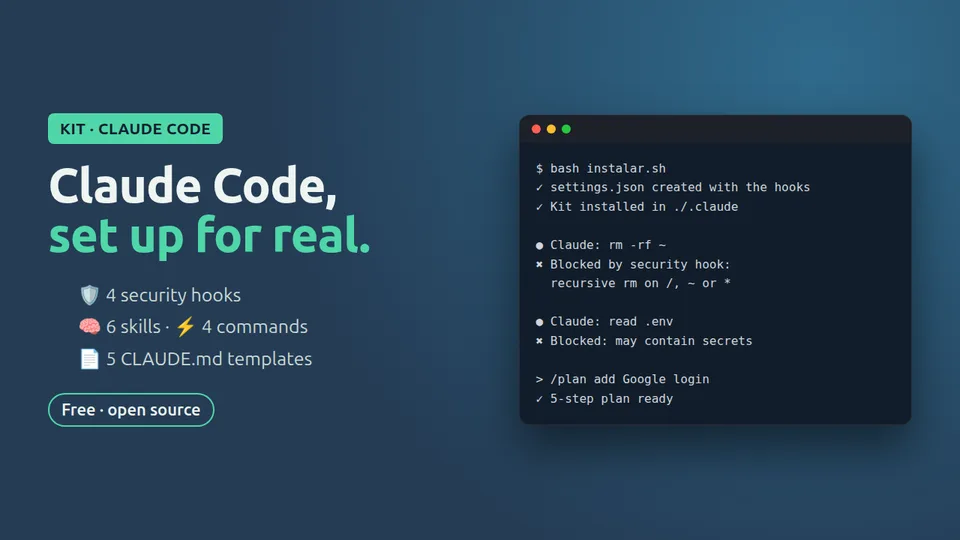

New Free
Claude Code Starter Kit
- hooks/: blocks rm -rf, git push --force, curl | sh and reading .env files or SSH keys
- skills/: code review and conventional commits
- comandos/plan.md: the /plan command
- plantillas-claude-md/: Node/TypeScript and Python